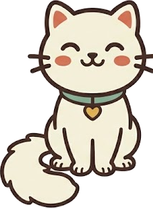
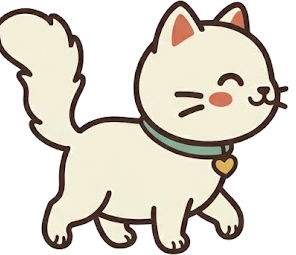

1
El agua, lejos de la comida
Por instinto, muchos gatos prefieren beber lejos de donde comen. Si el tuyo bebe poco, prueba a separar los cuencos.
Soy Nata, la gata del ClubGatuno. Aquí tienes mis cosas favoritas y algunos consejos para que tu gato sea el más feliz de la casa.
Ver los favoritos de Nata
Productos útiles, probados por miles de gatos y fáciles de comprar en Amazon.
Pequeños trucos que marcan la diferencia.
Por instinto, muchos gatos prefieren beber lejos de donde comen. Si el tuyo bebe poco, prueba a separar los cuencos.
Rascar es una necesidad, no una travesura. Pon el rascador justo al lado del mueble que más le gusta arañar.
Un rato de caza con una caña de plumas reduce el estrés y el sobrepeso, sobre todo en gatos que no salen de casa.
Lo ideal es tener un arenero por gato y uno más, siempre en un sitio tranquilo y lejos de la comida.

Hazte miembro gratis: recibe tu carné del club y la Carta de Nata cada semana.
Y síguenos en redes para ver las aventuras de Nata todos los días: